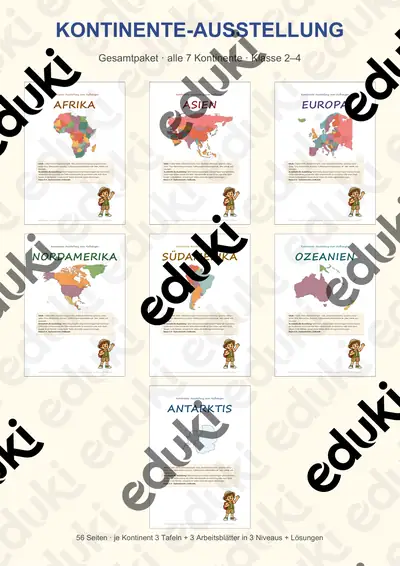
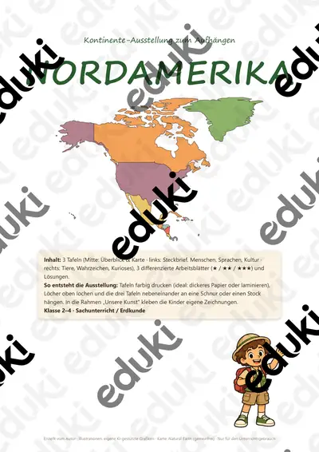
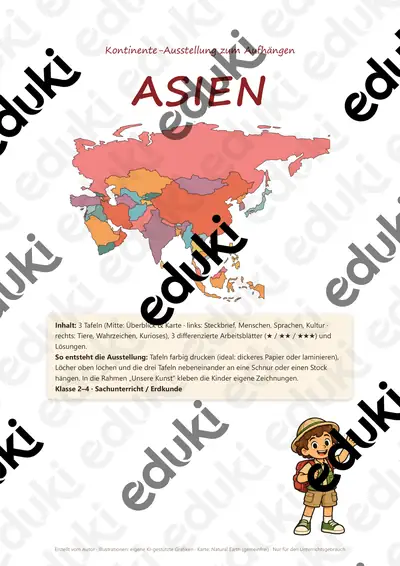

Kontinente und Ozeane: Arbeitsblätter für Klasse 2–7 (Erdkunde)
Die Orientierung auf dem Globus gehört zu den Grundlagen der Erdkunde. Schon in der Grundschule lernen Kinder sieben Kontinente und die Ozeane kennen, später kommen Klimazonen und Staaten dazu.
Zum Themenkern zählen sieben Kontinente, Ozeane und Äquator. Als Vertiefung bieten sich Nord- und Südpol und Tierwelt der Kontinente an, am Ende steht oft Globus.
Wo genau im Lehrplan das Thema steht, unterscheidet sich von Land zu Land, häufig im Fach Erdkunde in den Klassen 2 bis 7. Gemeinsames Ziel: die Kinder benennen Kontinente und Ozeane und ordnen ihnen typische Tiere und Länder zu.
Eine Reihe zu Kontinente und Ozeane lässt sich so gliedern: erst sieben Kontinente erarbeiten, dann Ozeane anwenden, später Nord- und Südpol und Tierwelt der Kontinente vertiefen. Zu jedem Material gehört eine Musterlösung, die Korrektur und Selbstkontrolle erleichtert. Zur Differenzierung eignen sich die Lesespurgeschichten mit ihren drei Niveaustufen.
Zum Thema finden Sie 26 Materialien, unter anderem Kontinente-Ausstellung Gesamtpaket, Steckbriefe Länder Asiens und Steckbriefe Länder Afrikas, verteilt auf 2 Lesespurgeschichten und 11 Lückentexte mit Hörverstehen in Klasse 2–8. Ein Globus oder eine Wandkarte in Reichweite, die ständig genutzt wird, verankert das Weltbild nachhaltig.
Das gehört zum Thema
Passende Arbeitsblätter und Materialpakete

Kontinente-Ausstellung Gesamtpaket – alle 7 Kontinente: Tafeln + differenzierte Arbeitsblätter, Klasse 2–4

Steckbriefe Länder Asiens – Materialpaket (12 Länder mit Flaggen, differenziert, mit Lösungen)

Steckbriefe Länder Afrikas – Materialpaket (12 Länder mit Flaggen, differenziert, mit Lösungen)

Steckbriefe Länder Amerikas – Materialpaket (12 Länder aus Nord-, Mittel- und Südamerika mit Flaggen, differenziert, mit Lösungen)

Materialpaket Steckbriefe Bundesstaaten der Vereinigten Staaten von Amerika #demokratiestärken

Der Wettlauf zum Südpol – eine Expedition ins ewige Eis – Lesespurgeschichte mit Rätselaufgaben (Klasse 7)

Der Nordpol – Lesespurgeschichte mit Rätselaufgaben (Klasse 4)

Vereinigte Staaten von Amerika Lückentext mit Wortspeicher Hörverstehen und Suchsel

Pazifischer Ozean Lückentext mit Wortspeicher Hörverstehen und Suchsel

Ozeanien Lückentext mit Wortspeicher Hörverstehen und Suchsel

Kontinent Lückentext mit Wortspeicher Hörverstehen und Suchsel

Indischer Ozean Lückentext mit Wortspeicher Hörverstehen und Suchsel

Australien Lückentext mit Wortspeicher Hörverstehen und Suchsel

Atlantischer Ozean Lückentext mit Wortspeicher Hörverstehen und Suchsel

Arktis Lückentext mit Wortspeicher Hörverstehen und Suchsel

Antarktis Lückentext mit Wortspeicher Hörverstehen und Suchsel

Amerika Lückentext mit Wortspeicher Hörverstehen und Suchsel

Afrika Lückentext mit Wortspeicher Hörverstehen und Suchsel

Kontinente-Ausstellung Antarktis – 3 Tafeln + differenzierte Arbeitsblätter (★/★★/★★★), Klasse 2–4

Kontinente-Ausstellung Südamerika – 3 Tafeln + differenzierte Arbeitsblätter (★/★★/★★★), Klasse 2–4

Kontinente-Ausstellung Nordamerika – 3 Tafeln + differenzierte Arbeitsblätter (★/★★/★★★), Klasse 2–4

Kontinente-Ausstellung Europa – 3 Tafeln + differenzierte Arbeitsblätter (★/★★/★★★), Klasse 2–4

Kontinente-Ausstellung Asien – 3 Tafeln + differenzierte Arbeitsblätter (★/★★/★★★), Klasse 2–4

Kontinente-Ausstellung Afrika – 3 Tafeln + differenzierte Arbeitsblätter (★/★★/★★★), Klasse 2–4
Weitere 2 Materialien zum Thema im Material-Finder.
Häufige Fragen
Für welche Klassenstufe passen die Arbeitsblätter zu Kontinente und Ozeane?
Passend sind Klasse 2–8. Von den 26 Titeln wenden sich die meisten an Klasse 5, einige lassen sich differenzierend auch in benachbarten Stufen nutzen.
Welche Inhalte decken die Materialien zu Kontinente und Ozeane ab?
Die Materialien arbeiten an sieben Kontinente, Ozeane und Äquator und gehen dann weiter zu Nord- und Südpol, Tierwelt der Kontinente und Globus. Vorab lohnt ein Blick in den Lehrplan des eigenen Bundeslandes.
Wie setze ich Kontinente und Ozeane im Unterricht ein?
Ein Globus oder eine Wandkarte in Reichweite, die ständig genutzt wird, verankert das Weltbild nachhaltig. So entsteht aus den Blättern eine kleine Einheit, die sich auf zwei bis drei Stunden verteilen lässt.
Mehr Material nach Fach und Klasse
- Alle Materialien Sachunterricht
- Arbeitsblätter Sachunterricht Klasse 2
- Arbeitsblätter Sachunterricht Klasse 3
- Arbeitsblätter Sachunterricht Klasse 4
- Arbeitsblätter Sachunterricht Klasse 5
- Arbeitsblätter Sachunterricht Klasse 6
- Unterrichtsmaterial Klasse 2
- Unterrichtsmaterial Klasse 3
- Unterrichtsmaterial Klasse 4
- Unterrichtsmaterial Klasse 5
- Unterrichtsmaterial Klasse 6
- Unterrichtsmaterial Klasse 7
Verwandte Lehrplanthemen
- Länder der Erde (Erdkunde, Klasse 5–10)
- Bundesländer und Landeshauptstädte (Erdkunde, Klasse 3–7)
- Heimat, Region und Bundesländer-Vergleich (Erdkunde, Klasse 3–8)
- Karte und Orientierung (Erdkunde, Klasse 3–6)
- Länder Europas (Erdkunde, Klasse 4–8)